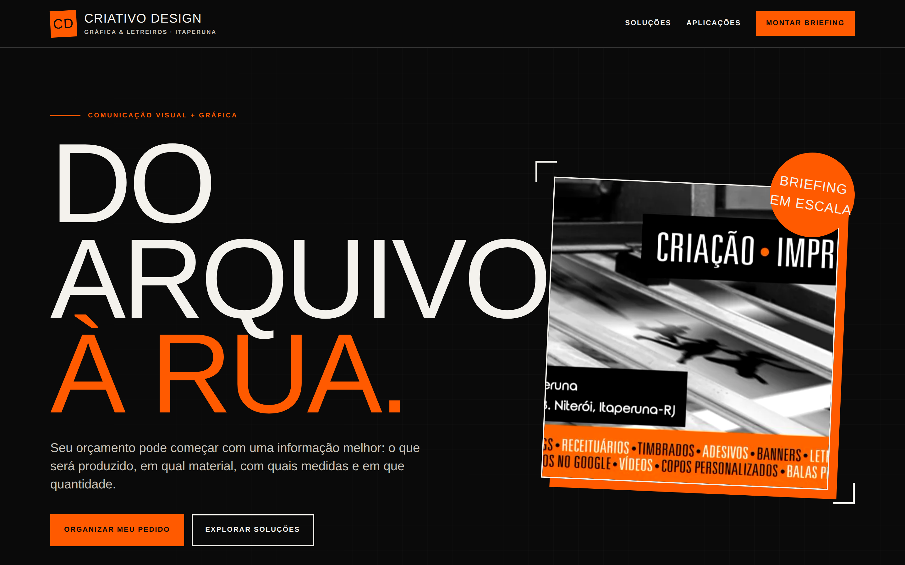

Tecnologia que move o negócio.
Experiências e ferramentas comerciais sob medida.
Menos atrito. Mais negócio andando.
A Domo transforma agenda, orçamento, briefing, portfólio, campanha e operação em fluxos claros, rápidos e feitos para o seu negócio.
- trabalhos reais para abrir
- demo antes do compromisso
- feito para uso real
domo / operação
fluxo ativo
Visão rápidaO próximo passo está claro.
agora
Novo orçamentobriefing concluído
agoraAula experimentalhorário confirmado
14:30Campanha de retornolista pronta
hojeretrabalho↓ menos
próxima açãoclara
agendaorçamentobriefingportfóliocampanhaaula experimentalfluxos sob medida
Capacidade por resultado
Não vendemos uma tela. Construímos o caminho até o resultado.
O formato muda conforme o problema. A tecnologia entra onde reduz atrito, organiza trabalho ou ajuda o negócio a vender e atender melhor.
Agenda sem caça ao horário
Disponibilidade, confirmação e próxima ação no mesmo fluxo.
agenda • atendimentoOrçamento sem conta refeita
Itens, regras e proposta organizados para responder com padrão.
orçamento • propostaBriefing que já organiza
Perguntas certas antes do trabalho começar, sem contexto perdido.
briefing • qualificaçãoPortfólio que ajuda a decidir
Prova visual, hierarquia e ação sem catálogo genérico.
portfólio • presençaCampanha que vira jornada
Segmento, mensagem e destino conectados em vez de disparo solto.
campanha • conversãoAula experimental sem pingue-pongue
Interesse, horário e confirmação numa jornada curta.
aula experimental • agendaFluxos sob medida quando o processo não cabe numa caixinha.
Se a operação é específica, a solução também pode ser.
operações • automações • ferramentas comerciaisTrabalhos para explorar
Capacidade se prova abrindo.
Cada peça abaixo está identificada pelo que realmente é. Demonstração é demonstração. Experimento é experimento. Sem fantasia comercial.
demos / jair-neto

Jair Neto
Presença autoral que leva da primeira impressão ao briefing sem transformar trabalho artístico em catálogo genérico.
- portfólio responsivo
- briefing integrado
- CTA comercial
demos / criativo-design

Criativo Design
Uma jornada que organiza serviço, medidas, material e quantidade antes do orçamento.
Abrir trabalho ↗demos / ferrini

Ferrini CrossFit
Experiência orientada a levar interesse até a aula experimental com menos conversa solta.
Abrir trabalho ↗fitaroni / vitrine
F
Fitaroni
Exploração de presença comercial para transformar produto em uma jornada clara e acionável.
Explorar experimento ↗legado / presença
L
Legado
Exploração de identidade digital e organização de conteúdo para uma experiência comercial coerente.
Explorar experimento ↗Do problema ao fluxo
A interface é consequência. O raciocínio vem antes.
Troque o cenário e veja como a solução muda conforme o resultado esperado.
Como a Domo trabalha
Entender. Demonstrar. Só então construir.
- 01entender
Mapear o atrito
Onde o negócio perde tempo, oportunidade ou clareza?
- 02organizar
Desenhar a jornada
Qual é o caminho mais curto entre a dor e o resultado?
- 03demonstrar
Materializar uma demo
Antes de discutir abstrações, colocamos algo concreto na tela.
- 04entregar
Construir o que merece existir
Com o caminho validado, a solução cresce sem peso inútil.
Primeiro, prova.
Seu negócio não precisa comprar uma promessa.
Mostre o processo que está travando. Quando fizer sentido, transformamos o problema em uma demo gratuita e concreta para você avaliar.
Quero uma demo gratuitaSem compromisso de projeto. Primeiro, clareza.